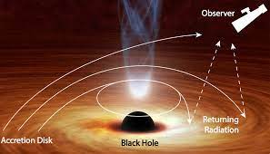
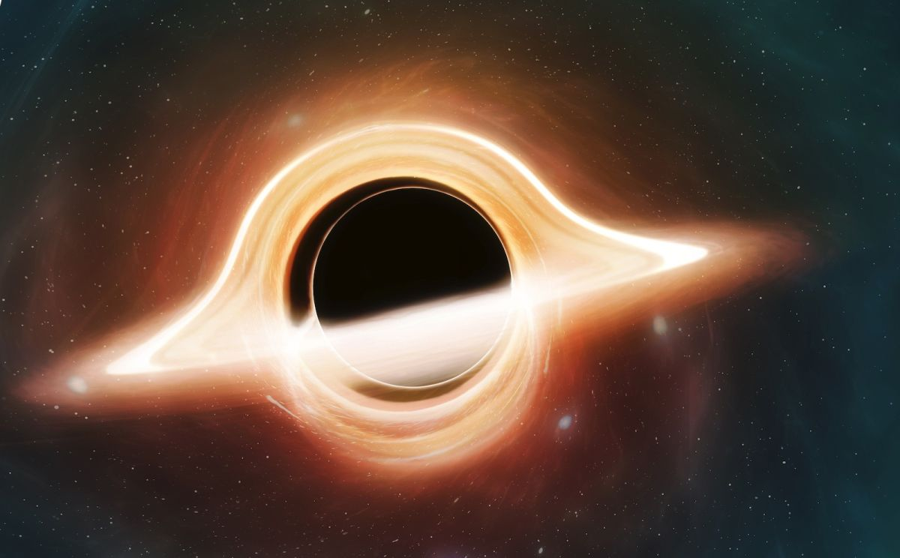

A black hole is a region of spacetime where gravity is so strong that nothing – no particles or
even electromagnetic radiation
such as light – can escape from it. The theory of general relativity
predicts that a sufficiently compact mass can deform spacetime
to form a black hole.Black holes are
really very simple becausethey have just two main parts – the Event Horizon and the
Singularity.
The Event Horizon is the outer limit of the black hole.There are four types of black holes: stellar,
intermediate, supermassive, and miniature.The most commonly known way a black hole forms
is by stellar death.
A black hole is a region of spacetimewhere gravity is so strong that
nothing
– no particles or even electromagneticradiation such as light – can escape
from it. The theory of general relativity predicts that
a sufficiently
compact mass can deform spacetime to form a black hole
.have you ever wanted to go into a blackhole?If you leapt
heroically into a stellar-mass black hole, your body would be subjected
to a process called 'spaghettification' (no, really, it is).
The black hole's gravity
force would compress you from top to toe, while stretching you at the same time… thus, spaghetti
now if you wondered how black holes bend light? just look at the images below
.

this picture is an example of a black hole bending light

this is the image thats shown after light has bended.
note:(these are not pictures of a real blackhole)